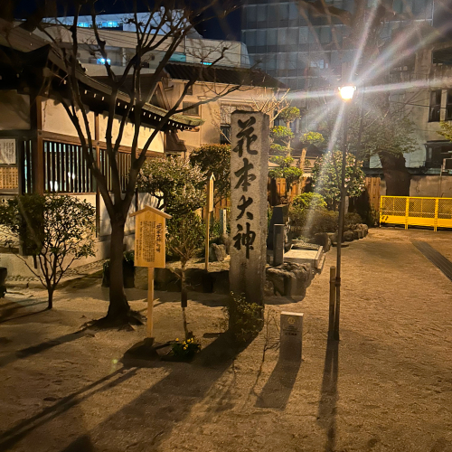
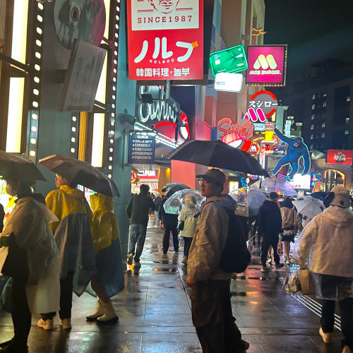

박정민
Frontend & Backend Developer nicejpm@naver.com안녕하세요, 함께 성장하고 도전하는 박정민입니다. 웹 개발자로서 제 목표는 사용자들의 니즈를 정확히 파악하고, 그에 맞는 웹사이트를 제작하는 것입니다. 사용자들의 행동과 트렌드를 지속적으로 관찰하여 새로운 아이디어를 발견하고, 그것을 실현시켜 사용자들이 더 나은 경험을 할 수 있도록 하는것이 목표입니다.
또한 저는 진취적이고 도전적인 성격을 가진 사람으로, 새로운 것을 시도하고 혁신적인 방법을 통해 문제에 도전하는 것을 즐깁니다. 특히 기술적인 분야에서의 도전에 큰 흥미를 느끼고 있으며, 지속적인 학습과 역량 강화에 열정을 가지고 있습니다. 학창시절 통신선로 기능반에 들어가 통신선로라는 기술을 슥듭하고 대회에 출전하여 수상한 이력이 있습니다. 남들보다 빠르게 기술을 슥듭할려고 늦게까지 남아 기술을 공부하고 파악하는데 힘을 쏟았습니다. 최근에는 리액트를 공부하여 사용자 중심적이고 혁신적인 웹 사이트를 제작하는 데 집중하고 있습니다. 이를 통해 사용자의 요구를 파악하고 그에 맞는 솔루션을 찾는 과정에서 끊임없는 도전과 성장을 경험하고 있습니다. 전직장에서의 경험을 통해 커뮤니케이션과 협업 능력 또한 기를 수 있게되었습니다. 문제가 발생했을 때 적극적으로 해결책을 모색하고 팀원들과 소통하며 함께 성과를 이루고 문제를 해결 하는것이 중요하다고 느꼈습니다. 또한, 지속적인 자기개발에 힘쓰고 있습니다. 온라인 강의를 통해 새로운 기술을 배우고, 기술 커뮤니티에 참여하여 다른 전문가들과 소통하며 지식을 공유하는 등의 활동을 통해 자신을 계속 발전시키고 있습니다. 이러한 경험과 노력을 토대로 프로젝트에 새로운 가치를 더하고 함께 성장하는 기회로 갖고 싶습니다. 저의 열정과 노력을 바탕으로 함께 성장하기를 기대합니다. 감사합니다.
Skill
- Html
- HTML (HyperText Markup Language) : 웹 페이지 구조를 정의하는 마크업 언어입니다
- Css
- CSS (Cascading Style Sheets) : 웹 페이지의 스타일과 레이아웃을 디자인하는 스타일 시트 언어입니다.
- Javascript
- JavaScript : 웹 페이지를 동적으로 만들고 상호 작용할 수 있게 하는 프로그래밍 언어입니다.
- React
- React.js : 사용자 인터페이스를 만들기 위한 JavaScript 라이브러리입니다
- Node.js
- Node.js : 서버 측 JavaScript 런타임으로, 서버 애플리케이션 개발에 사용됩니다
- Next.js
- Next.js : React 기반의 프레임워크로, 서버 사이드 렌더링과 정적 사이트 생성을 지원합니다.

- 

- 